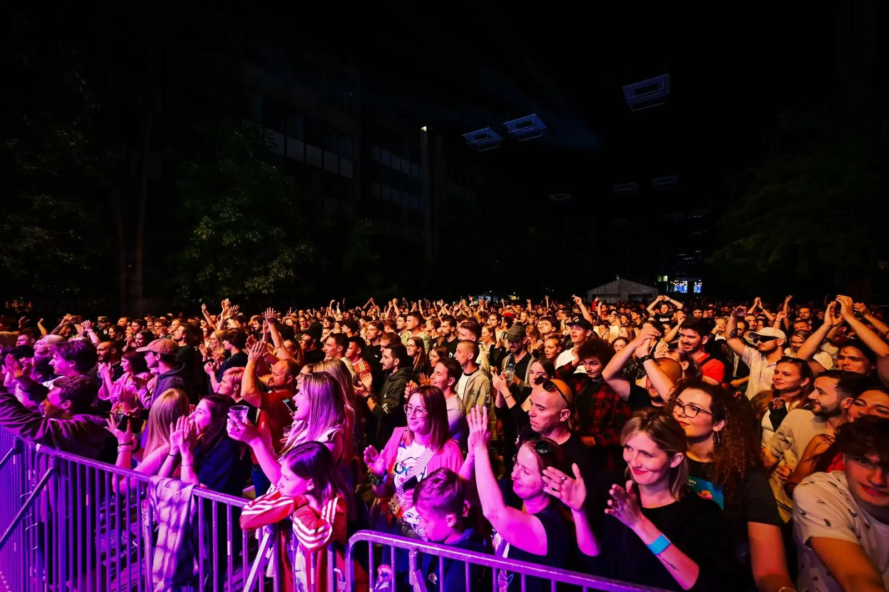

Festivals · Culture
Festival Lent 2027
- Dates
- –
- Venue
- Lent and venues across Maribor (21 official venues on the current festival site)
- Location
- Maribor, Slovenia
- Format
- In-person
- Category
- Culture
- Industry
- Culture
- Organiser
- Narodni dom Maribor
- Official website
- https://nd-mb.si/en/festival-lent/o-festivalu-lent/
About
Dates are local civil dates in Slovenia (Central European Time, UTC+1 / UTC+2 in summer).
Topics: open-air festival, music, theatre, folkart, performing arts.
No expected-attendance figure for the 2027 edition was published on the official pages fetched 24 Nov 2026. Official Narodni dom Maribor statistics for the current 9-day format list 139,400 visitors in 2025, 149,800 in 2024 and 129,600 in 2023; those previous-edition recaps were not stored as 2027 expected attendance. Ranked by our estimated size tier 'very large' (100,000+ attendees/visits), a judgement from format, venue and scale, not an official number.